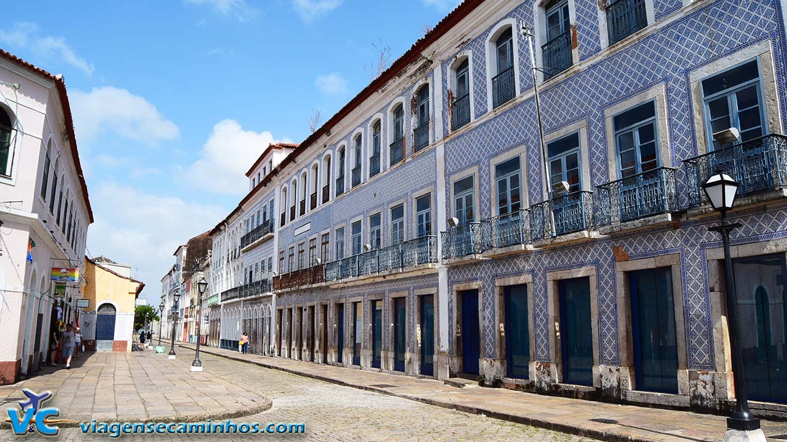
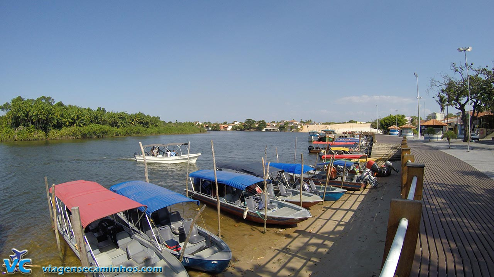
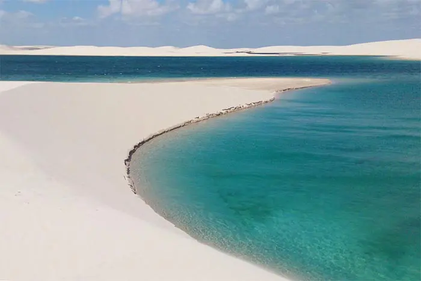
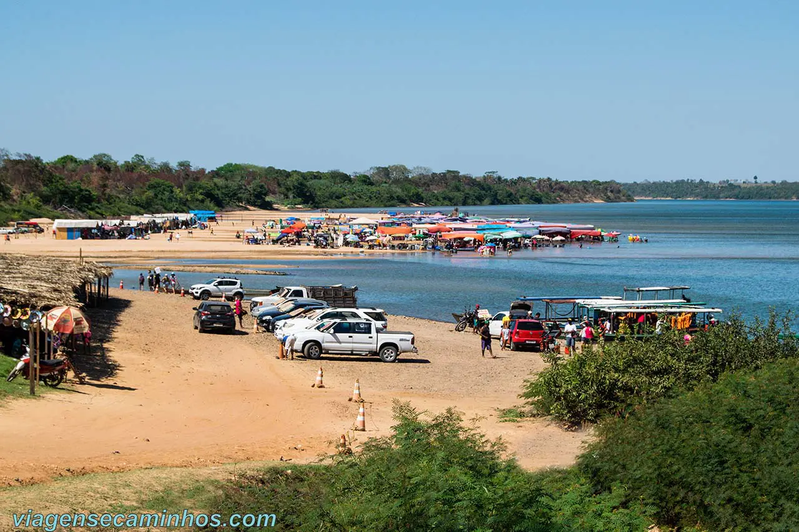
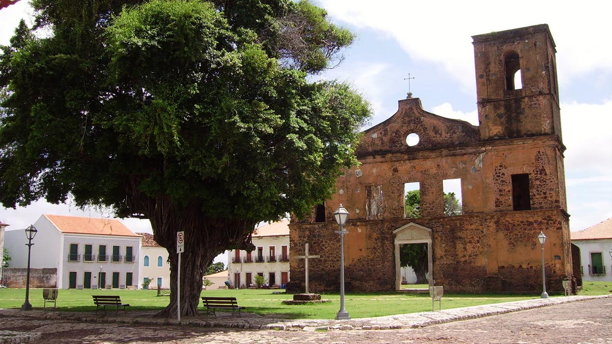

A capital do Maranhão tem um vasto centro histórico com cerca de 4 mil construções,
parte delas reconhecidas pela Unesco como Patrimônio Cultural, construídas sob influência de portugueses,
espanhóis, holandeses e franceses.
Confira a localização: São Luís, Maranhão

Barreirinhas é a principal cidade base para visitar os Lençóis Maranhenses,
considerado um dos destinos de ecoturismo mais bonitos do Brasil, que atrai turistas do mundo inteiro.
Os passeios com guia em veículos com tração nas quatro rodas ou de barco para circular
pelas trilhas de areia e rios dos Lençóis Maranhenses.
Confira a localização: Parque Nacional dos Lençóis Maranhenses

Assim como Barreirinhas, Santo Amaro do Maranhão, também fica na borda dos Lençóis Maranhenses,
com opções de passeios por paisagens incríveis do parque.
Porém, até pouco tempo, o acesso à cidade era complicado, se dava somente por estradas de areia com veículos 4×4.
A poucos anos, o asfalto chegou à cidade facilitando a visitação.
Confira a localização: Santo Amaro do Maranhão

Apesar de não ser das cidades do Maranhão mais preparadas para o turismo,
Imperatriz conta com aeroporto, boa infraestrutura de hospedagem e é a porta
de entrada para visitar a Chapada das Mesas.
Confira a localização: Imperatriz

Alcântara é uma pequena cidade histórica situada no outro lado da Baía de São Marcos,
uma opção de bate-volta de barco para quem está em São Luís do Maranhão.
Confira a localização: Alcântara
© 2026 Top 5 Cidades. Todos os direitos reservados.